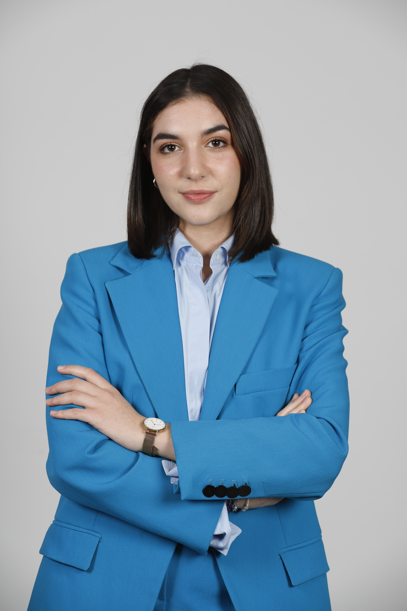
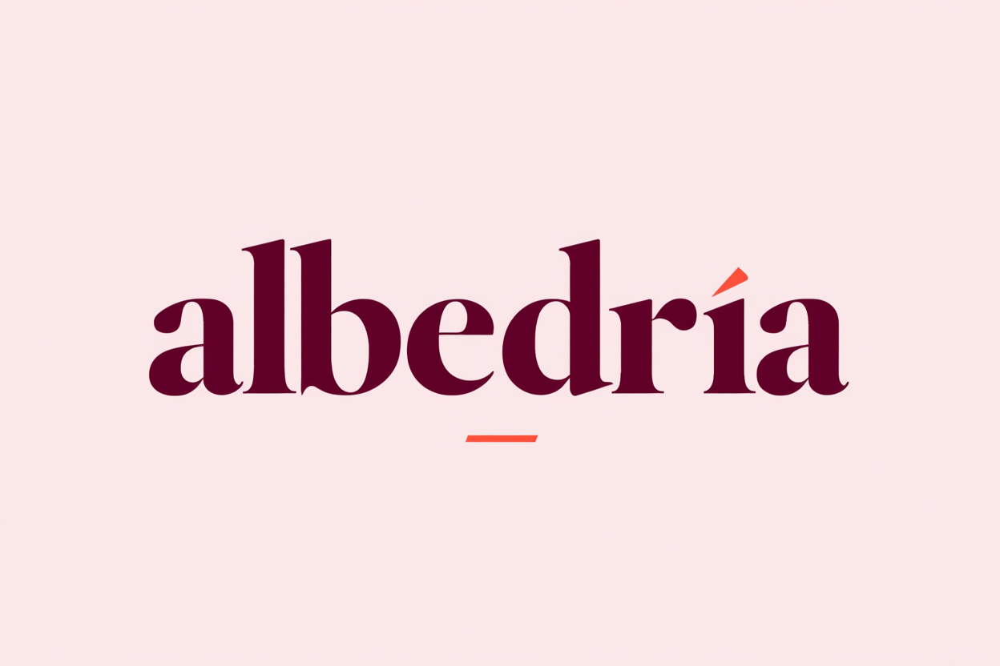

Sobre Mí

Periodista con interés en la comunicación audiovisual y sonora. Me gusta crear y producir contenidos para radio, televisión y plataformas digitales, adaptando los mensajes a distintos formatos y públicos.
Me considero una persona creativa, responsable y con facilidad para trabajar en equipo, siempre buscando nuevas formas de contar historias que conecten con la audiencia.
Formación Académica
Grado en Periodismo con Mención en Visualización de la Información
Universidade de Santiago de Compostela (2022-2026)
Formación sólida en comunicación, adaptada a las nuevas tecnologías, a la evolución del sector y al uso de herramientas de visualización e inteligencia artificial (IA).
Podcasting: Producción y comercialización
RTVE (Junio 2025 - Noviembre 2025)
- Técnicas de locución y diseño sonoro.
- Creación de pódcast.
Producción y distribución de contenido multimedia para profesionales
RTVE (Junio 2025 - Noviembre 2025)
- Producción y distribución de videopódcast, nuevos formatos y redes sociales.
- Análisis automatizado de contenido con inteligencia artificial (IA).
Curso Marketing de Contenidos
ELLE Education y Mindway Liberal Studies (Septiembre 2024 - Octubre 2024)
Tipos de soportes, aplicaciones para creación, storytelling vs. storydoing y estrategia de marketing.
Curso Asesoría de Imagen y Personal Shopper
ELLE Education y Mindway con la Universidad Camilo José Cela (2024-2025)
Asesoría de imagen, personal shopper, creación de modelo de negocio, marca personal y coaching.
Experiencia
En el ámbito periodístico - Radio Galega (CSAG)
Noviembre 2025 - Febrero 2026
Redacción de noticias, boletines informativos, elaboración de reportajes y entrevistas. Locución en los informativos de la semana y fin de semana y de los boletines en el magazine matinal.
Ejemplos de mi trabajo:
▪ Participación en boletines a lo largo del programa:
▪ Participación en programas de semana y fin de semana:
En el sector de la moda y asesoría de imagen
He trabajado de forma puntual con clientas como asesora de imagen, creando propuestas personalizadas adaptadas a sus necesidades. Además, desarrollé un portfolio académico con el análisis de casos prácticos (creación de fondos de armario, asesoría para eventos y estudio de tejidos).
Confirmó mi idea de que la moda es una forma de comunicación capaz de expresar identidad y crear conexión entre cómo somos y cómo nos mostramos al mundo.
Albedría (Proyecto propio)
Proyecto propio formado por una web, newsletter y redes sociales de moda. En él se crean y comparten contenidos periodísticos sobre la actualidad del sector, repaso histórico por prendas y personajes, columna de opinión y consejos.

Aptitudes e Idiomas
Aptitudes
- Capacidad para el trabajo en equipo y organización.
- Adaptabilidad a nuevos formatos y tendencias digitales.
- Redacción y locución periodística.
- Habilidad para hablar en público (Club de Debate Compostela).
Idiomas
- Español: Nativo
- Gallego: Nativo
- Inglés: Nivel B2
Para que nos pongamos en contacto
Si quieres saber más sobre mi trabajo, no dudes en escribirme o llamarme.
Teléfono: 611 418 199
Email: reylopezalessandra@gmail.com
LinkedIn: Perfil de Alexandra Rey
Dirección: Calle Montero Ríos, 44, Santiago de Compostela